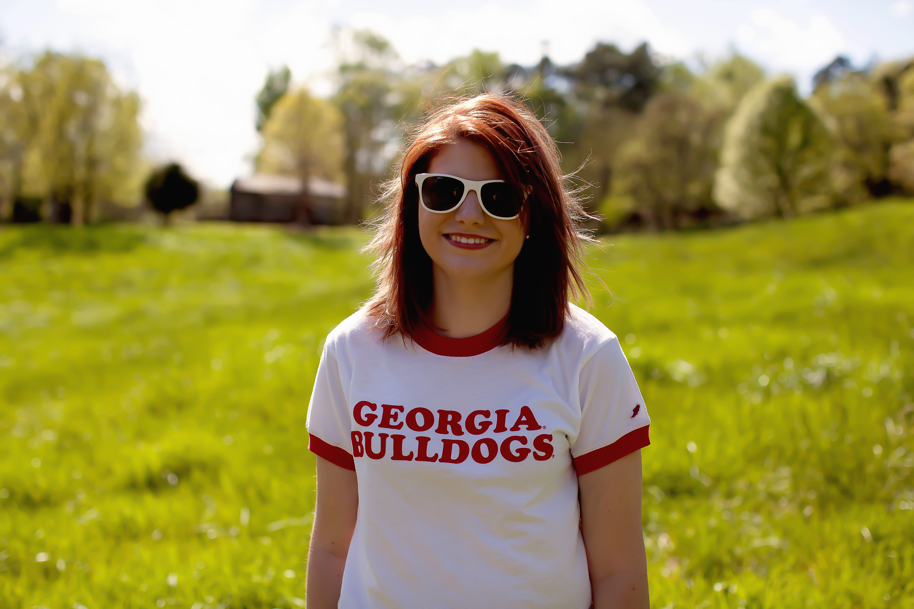

Jada Nicole Stark

Hi! My name is Jada, and I am a freshman here at UGA. I am part of the College of Agricultural and Environmental sciences because my major is Agricultural and Applied Economics. I have always had a love for agriculture, but my father was the one who cultivated my love for economics.
Click Here to learn more about my family
A few of my goals in life are
- To finish my bachelors degree
- To work in the field of agricultural policy
- To get married and have a few children
- To make my family proud of me
What I'm Doing to Accomplish My Goals
| School | Work | Personal |
| Always attending class | Applying for internships | Spending time with family |
| Studying everyday | Updating my resume | Attending church regulary |
| Turning in assignments on time | Making connections | Babysitting for family and friends |